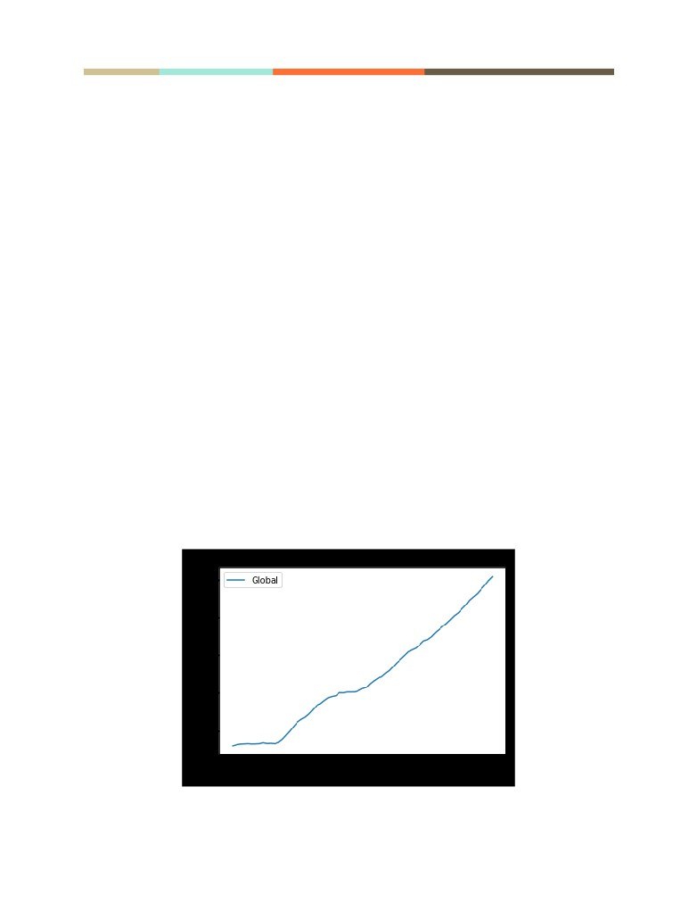
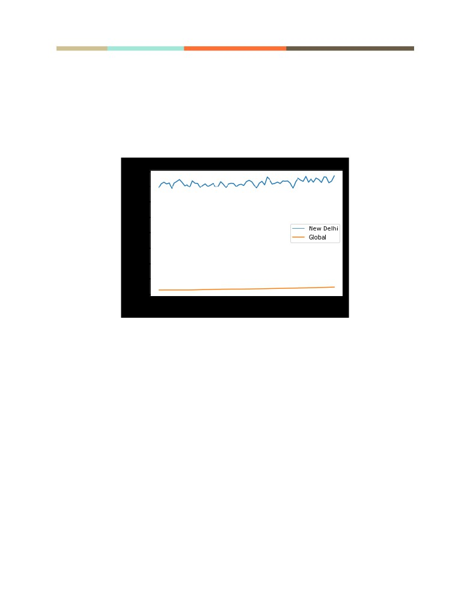

Explore Weather Trends
May 18th 2020
Udacity - Data Analyst Nanodegree
Tanmaya Chaudhary
TERM -1, Project - 1, Explore Weather Trends
New Delhi, INDIA
1
Overview
In this project, I have analyzed local temperature of New Delhi, India in accordance with the
global temperature data and compared. I had been provided with a database on Udacity
portal from where I have to extract, manipulate and visualize the data as in the following
goals.
Goals
1. Extraction of data from the database and export to CSV file
2. Making a chart visualization based on extracted data
3. Observation based on chart
Tools Used:
1. SQL: To extract the data from the database
2. Python: For calculating moving average and plotting line chart
3. ANACONDA - Jupyter Notebook: For writing python code and making observations
4. Google Sheets: Having a look at the data and writing project
NOTE: In this project I have taken help from various resources in order to make use of
some libraries, keywords and commands correctly. I have listed links or resources in the
references giving a value like (**--**) in steps in order to make reference index.
To write pretty code in this document, I have used google sheets DOCS color formatting.
STEP 1 - Extraction of Data from provided Database
I have done the following activity in order to make a relevant dataset. I have learnt the SQL
basics from lessons provided before this project. I have also done an introductory course
on SQL and relational database from which I have used some concepts.
1. To see which cities are available for "India" in the given dataset:
SELECT *
FROM city_list
WHERE country LIKE ‘India’
2
2. I know that I can make a relevant dataset by joining the two tables. But, I found from
the SCHEMA that both city_data and global_data contains same column named
'avg_temp'. So I have changed the names of the columns respectively in order to
have distinct columns. (**A**)
ALTER TABLE city_data RENAME COLUMN avg_temp to CAT;
-- CAT = City Average Temp.
ALTER TABLE global_data RENAME COLUMN avg_temp to GAT;
-- GAT = Global Average Temp.
3. Now I have written following code in order to join the two tables and have the
relevant data: (**B**)
SELECT global_data.year, global_data.GAT, city_data.CAT
FROM global_data JOIN city_data
-- Joining tables
ON global_data.year = city_data.year
-- reference for join
WHERE city LIKE 'New Delhi';
Now I have got an option of downloading the file as CSV format. Downloaded as
“results.csv”.
STEP 2 - Python Code for Making Line Chart
So I have used some python libraries here, which I have learnt when I was researching a lot
about data science and tried to solve Titanic problem of kaggle.
I have written these codes on Jupyter Notebook.
# Importing the important Libraries
import numpy as np
import pandas as pd
# for loading data into the notebook
from matplotlib import pyplot as plt
#for making line chart
# Importing the extracted Data Set
data = pd.read_csv("results.csv")

3
Now I have defined a function for the calculation of moving averages in order to get
smooth graph. (**C**)
# function that calculates the MOVING AVERAGE
def moving_avg(mA_range, data_input):
output = data_input.rolling(window = mA_range, on = "cat").mean().dropna()
return output
# Function Calling with the range of Moving Average
mA_value = 150
chart_moving_avg = moving_avg(mA_value, data)
# Drawing the graph: Global Temperature
plt.plot(chart_moving_avg ['year'], chart_moving_avg ['gat'], label = 'Global')
plt.legend()
plt.xlabel ("Years")
plt.ylabel ("Temperature (°C)")
plt.title ("Global Average Temperature")
plt.show ()
So I have got the following output:
I have separately analysed the global data in order to check and distinguish it from
combined data of New Delhi and Global Average temperatures.

4
Now combined with New Delhi data,
# Drawing the graph: New Delhi and Global Temperature
# Introducing this line in the previous code above the “global_data plot command”
plt.plot(chart_moving_avg ['year'], chart_moving_avg ['cat'], label = 'New Delhi')
I got the following graph:
I have also analysed further by using:
data.head (10)
data.tail (10)
RESULT - Observations:
I have observed that, if I choose a short range for moving average, say 10 or 50, I will get
messy line in the graph. Also the range of the “Years” on x-axis becomes short. And if I use
a larger moving average, say 150, I will get relatively smooth graph and range of x-axis is
longer.
Observation from the Line Charts:
1. The chart of New delhi Vs Global Temperature: Very big difference between the
average temperature of New Delhi and that of world.
2. Since I have got a slight inclined straight line for global data. I have separately
plotted the graph of global data. (The first graph)
5
3. From the first graph: I noticed that global temp. is increasing quiet constantly with
years by 0.1 degree centigrade.
To further verify this I have used the command: data.tail (10) which displayed me the 10
rows from the last and I have seen the same insight as in the graph.
After approx. 1882, the global temperature (with a sudden change) started increasing
at a higher rate. This may be an effect of worldwide industrialization and newer
technologies. Global warming comes to play from the year of 1882.
4. Again coming back to the second chart, I observe that New Delhi have
temperatures greater than the global average.
5. If I draw a tangent line touching the two troughs or crests of line of New Delhi, I see
that there is a consistent change between this line and the line of global average
over time.
To verify the temperatures of recent years, say 2010 or 2012, I used data.tail (10) which
showed me the same insight from the table.
6. The city of New Delhi seems to be hotter than any other cool place in the world.
If seen as a micro-study, using my knowledge, New Delhi is surrounded by industrial
complexes and is situated at approx. 3 road hours from the city of Agra. Both the cities are
known to be the biggest industrial hubs since the era of British Empire in India. This may
be the reason of higher temperatures locally.
If seen as a macro-study, India lies nearer to the Equator and hence all the cities of the
world that lies between equator and tropic of cancer have higher temperatures as
compared to the global_data.
From this I came to a conclusion that the regions that lie between the tropic of
capricorn and the tropic of cancer, will have the greater temperatures as compared
to the global average.
REASON: Area between both of the above latitudes is very less as compared to the
remaining area. And as we go away from the equator, by general geographical science
temperatures tend to fall.
Hence the Global Average Temperature are very less as compared to equatorial
regions (or say New Delhi) and vary approx. between 8.4 to 9.6 degree centigrade.
6
7. Seeing the graph, the temperature of the world is on constant rise.
This is all of my observations for the data used in this project.
Key Considerations:
1. Unit of Temperature: Centigrade, on Y-axis
2. Years shown on X-axis
3. Different colors of lines for city and global average
4. Use of Matplotlib library for visualization
5. Applied moving average on City data in order to get relatively smooth line
6. Defined a function for easy code
7. Saved all of the codes in .ipynb files (Jupyter Notebook) for later reference and
regenerations or revisions.
REFERENCES:
A. Change Column Name:
B. Joining the tables:
C. Calculation command for Moving Average in Python:
Parameters for .rolling()